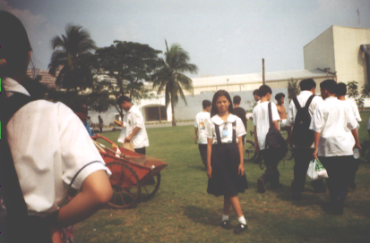
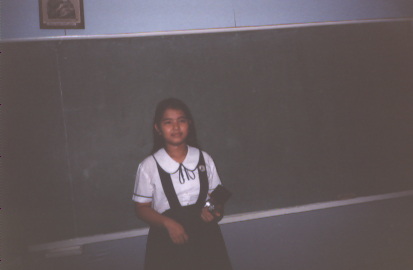

About Me
Contact Me
Pictures
Friendship QuotesMy FriendsLinks
View My GuestbookSign My Guestbook
About Me
Contact Me
Pictures
Friendship QuotesMy FriendsLinks
View My GuestbookSign My Guestbook| About Me
Contact Me
Pictures
Friendship QuotesMy FriendsLinks
View My GuestbookSign My Guestbook |
Friends and Families |
| My Best Friends | |
 |
Sheine Sheine is, was, and always will be my best friend. She's always been there for me and I know she'll never let me down. Even though she lives far away I always think about her and miss her. I can actually use the whole B.F.F. thing for us! She was a very good friend! |
 |
Nilda Nilda is of of the sweetest people I know. She cares a lot about her friends and she's just a great person to be friends with. She's funny too and interesting. |
| MyOther Friends | You are my friends right? I do have more friends, but I can't find a picture of them alone! But I will! |
| Mila (Miler) Miler is like really nice. She's not like those loud-mouthed people who talk junk in front of you. Miler's been there for me everytime. I ask her to cuss the people for me, well, not really ask her, but she does them anyway! She tells me what to tell them, when she don't feel like cuzzing them. One time, she cussed this girl who used to be my friend. It was weird, 'cause the next day, the girl she cussed tells us that she's sorry! Isn't that nice? So, thanks a lot for everything! |